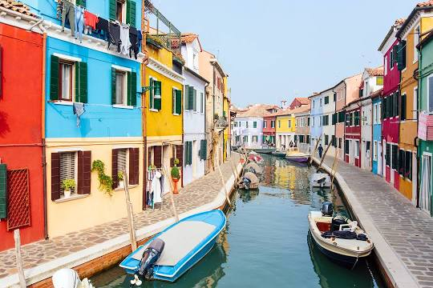

Italy's Historical Places
-

Leaning Tower of Pisa
The Leaning Tower of Pisa, or simply, the Tower of Pisa, is the campanile, or freestanding bell tower, of Pisa Cathedral. It is known for its nearly four-degree lean, the result of an unstable foundation. The tower is one of three structures in the Pisa's Cathedral Square, which includes the cathedral and Pisa Baptistry. The height of the tower is 55.86 metres from the ground on the low side and 56.67 m on the high side. The width of the walls at the base is 2.44 m. Its weight is estimated at 14,500 tonnes .The tower has 296 or 294 steps; the seventh floor has two fewer steps on the north-facing staircase.
Burano
The island was probably settled by the Romans, and in the 6th century was occupied by people from Altino, who named it for one of the gates of their former city. Two stories are attributed to how the city obtained its name. One is that it was initially founded by the Buriana family, and another is that the first settlers of Burano came from the small island of Buranello, about 8 kilometres (5 miles) to the south. Although the island soon became a thriving settlement, it was administered from Torcello and had none of the privileges of that island or of Murano.